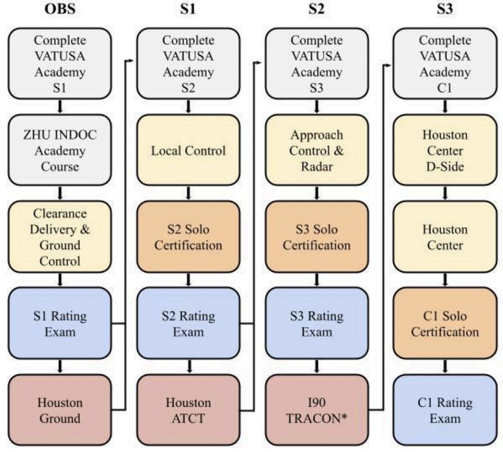

Training Syllabus
Disclaimer
This document is provided for Houston ARTCC controllers to use when providing virtual ATC services on the VATSIM network. The information herein is not intended for use in any real-world aviation applications.
Revision Information
- Document Number: ZHU P005.1B
- Date: 10 Apr 2025
- Revision: 1B
Record of Revisions
| Date | Revision | Editor |
|---|---|---|
| 23 Jan 2025 | 1A | JN |
| 10 Apr 2025 | 1B | JN |
This training order establishes and provides the outline of training for the Virtual Houston ARTCC (ZHU) training program within the VATUSA Virtual Air Traffic Simulation Network division. All controllers are required to be familiar with the contents of this order to ensure consistent application of training policy and adherence to operational standards.
1. General
1-1 Introduction
1-1-1. Purpose
This document exists to outline training procedures within vZHU and to provide clear expectations and guidelines for progression through training. This document is considered a supplement to any VATSIM, Executive Committee, VATUSA, and vZHU policies, procedures, and controller documentation.
1-1-2. Audience
All ZHU home controllers and visiting controllers.
1-1-3. Location
This order is available in digital PDF format on the ZHU ARTCC website at https://houston.center/ and can be accessed publicly within the CONTROLLERS > RESOURCES menu and documents section under POLICIES.
1-1-4. Cancellation
This training order cancels the Virtual Houston ARTCC Student Training Syllabus (HATS) Revision 1.
1-1-5. Explanation of Changes
1B: Added HOU Tier 1 to Tier 2 changes; New HOU lessons implemented in training program; OTS wording changed.
1-1-6. Responsibility
The Virtual Houston ARTCC Training Administrator is responsible for updating the information contained in this order. The TA is also responsible for notifying the VATUSA Deputy Director - Training Services to gain approval for any necessary revisions to this order.
2. Overview
2-1. Training Flow
2-1-1. Training Flowchart
ZHU Training Flow
 An asterisk indicates that all Tier 1 endorsements must be completed to progress.
2-1-2. Training Flow Information
- Students are permitted to progress to S3 unrestricted certifications before any Tier 1 or Tier 2 certifications are required to progress, as required by GCAP 8.5(e).
- All Tier 1 and Tier 2 certifications are required to be completed before a student attempts to gain an I90 certification.
- The S1, S2, S3, and C1 rating courses have ZHU Academy Courses that must be completed as the course is attempted. Refer to individual lesson prerequisites.
3. Rating Training
3-1. OBS to S1
3-1-1. Introduction to ATC (S1-L1)
Lesson Plan: Introduction to ATC (S1-L1)
Prerequisites
- Must hold an Observer rating at ZHU.
- Must have completed the ZHU INDOC Academy Course.
- Must have completed the VATUSA Basic ATC/S1 Exam.
- Must have completed the ZHU Introduction to ATC Academy Lesson.
Concepts Introduced:
-
National Airspace System (NAS)
- Classes of Airspace (ex. D, C, B)
- Special Use Airspace (ex. MOA, Restricted)
- Terminal Radar Service Area (TRSA)
- Mode C Veil
-
Weather
- Meteorological Aerodrome Report (METAR)
- Terminal Aerodrome Forecast (TAF)
- Lowest Usable Flight Level
-
Radio Telephony
- Establishing Two-Way Radio
- Phonetic Alphabet
-
Flight Data
- Parts of a Flight Plan
- Altitudes per Direction of Flight
- Reduced Vertical Separation Minima (RVSM)
- Equipment Suffix
-
FAA 7110.65 and vNAS
- Duty and Priority of ATC
Completion Standards
At the completion of this lesson, the student must be able to explain and apply all of the above S1 theory areas. The student must also know basic ZHU operations and how to find resources on our website.
3-1-2. Clearance Delivery Basics (S1-L2)
Lesson Plan: Clearance Delivery Basics (S1-L2)
Prerequisites
Must have completed the ZHU Clearance Delivery Basics Academy Lesson.
Position: AUS_DEL - Sweatbox
Concepts Reviewed
- National Airspace System
- Weather
- METARs
- TAFs
- Flight Data
- Parts of a Flight Plan
Concepts Introduced
- ATC Equipment
- CRC, vStrips, vTDLS
- Flight Strip Marking
- Basic Clearances
- IFR: CRAFT, Reroutes and Full Route Clearances
- Departure Procedures (SIDs)
- VFR Clearances and Flight Following
- Class C and D
- Issuing Clearances
- SOP/LOA Compliance
- Coordination
- Position Briefings
Completion Standards
After the completion of this lesson, the student must be able to successfully configure and use the Consolidated Radar Client (CRC), vStrips, and vTDLS applications as necessary. The student must be able to issue IFR and VFR clearances in accordance with prescribed phraseology. The student must also be able to coordinate with surrounding controllers and obtain/conduct position briefings.
3-1-3. Clearance Delivery Continued (S1-L3)
Lesson Plan: Clearance Delivery Continued (S1-L3)
Prerequisites
Must have completed the ZHU Clearance Delivery Continued Academy Lesson.
Position: MSY_DEL - Sweatbox
Concepts Reviewed:
- National Airspace System
- Weather
- IFR Flight Plans
- Reroutes & Full Route Clearances
- VFR Flight Plans
- SOP/LOA Compliance
- Coordination
- Position Briefings
Concepts Introduced:
- Class Bravo Operations
- Class Bravo VFR Clearances
Completion Standards
After the completion of this lesson, the student must be able to efficiently and effectively issue IFR and VFR clearances at Class B airports, including reroutes and full route clearances, in accordance with SOPs, LOAs, and prescribed phraseology.
3-1-4. Ground Control Basics (S1-L4)
Lesson Plan: Ground Control Basics (S1-L4)
Prerequisites
Must have completed the ZHU Ground Control Basics Academy Lesson.
Position: MSY_GND - Sweatbox
Concepts Reviewed:
- Coordination
- Position Briefings
Concepts Introduced:
- Airport Layout
- Movement and Non-Movement Areas
- Ground Control Procedures
- Taxi Instructions
- Intersection Departures
- Runway Crossings
- Transfer of Communication
- Conflict Resolution
- Aircraft Categories and Classes
- Abnormalities
Completion Standards
After the completion of this lesson, the student must be able to identify airport movement and non-movement areas, issue ground instructions, identify aircraft categories and classes, and correctly modify the flow of traffic due to abnormal situations.
3-1-5. Ground Control Continued (S1-L5)
Lesson Plan: Ground Control Continued (S1-L5)
Prerequisites
Must have completed the ZHU Ground Control Continued Academy Lesson.
Position: MSY_GND - Sweatbox
Concepts Reviewed:
- Ground Control Procedures
- Abnormalities
Concepts Introduced:
- Ground Sequencing
- Traffic Management Initiatives
- Helicopter Operations
Completion Standards
After the completion of this lesson, the student must be able to efficiently and effectively taxi aircraft on the ground per regulations. The student must be able to work helicopter operations. The student must be able to provide efficient ground sequencing, and abide by traffic management initiatives.
3-1-6. Combined Ground Operations (S1-L6)
Lesson Plan: Combined Ground Operations (S1-L6)
Prerequisites
Must have completed the ZHU Combined Ground Operations Academy Lesson.
Position: MSY_GND - Sweatbox
Concepts Reviewed:
- IFR Flight Plans
- VFR Flight Plans
- Clearance Issuance
- Ground Control Procedures
- Ground Sequencing
- Traffic Management Initiatives
- Coordination (Position Briefings)
Concepts Introduced:
- Progressive Taxi
Completion Standards
After the completion of this lesson, the student must be able to control Clearance Delivery and Ground Control simultaneously to standards.
3-1-7. Advanced Ground Control (S1-L7)
Lesson Plan: Advanced Ground Control (S1-L7)
Prerequisites
Must have completed the HOU S1 Academy Course.
Position: HOU_GND - Sweatbox
Concepts Reviewed:
- IFR Flight Plans
- VFR Flight Plans
- Clearance Issuance
- Ground Control Procedures
- Ground Sequencing
- Traffic Management Initiatives
- Coordination (Position Briefings)
Completion Standards
After the completion of this lesson, the student must be able to control Clearance Delivery and Ground Control simultaneously at an advanced level, and to standards.
Note: This session may be repeated as necessary until a recommendation can be issued for the S1 Rating Examination.
3-1-8. S1 Rating Examination (S1-RE)
Lesson Plan: S1 Rating Examination (S1-RE)
Prerequisites
Must have completed the ZHU S1 Pre-Checkout quiz.
Position: HOU_GND - Sweatbox
Completion Standards
After the completion of this Rating Examination, the student must be able to explain and apply all S1 theory competencies, and efficiently and effectively manage all aircraft as a ground controller.
Note: Upon successful completion of this session, a ZHU instructor may issue the S1 rating, if the student operates in accordance with standards listed in the VATUSA S1 competencies list.
3-2. S1 to S2
3-2-1. Introduction to Local Control (S2-L1)
Lesson Plan: Introduction to Local Control (S2-L1)
Prerequisites
- Must hold an S1 rating at ZHU.
- Must have completed the VATUSA S2 Academy Course.
- Must have completed the ZHU Introduction to Local Control Academy Lesson.
Concepts Introduced:
- Role of a Local Controller
- The Traffic Pattern
- Legs
- Entry Instructions
- The Option
- Traffic Advisories
- Active Runway Selection
- Take-off Clearances
- Departure Instructions
- Intersection Departures
- Cancellation of Take-off Clearances
- Landing Clearances
- Land and Hold Short Operations (LAHSO)
- Go-Arounds
- Same Runway Separation (SRS)
Completion Standards
At the completion of this lesson, the student must be able to explain and apply all of the above S2 theory areas.
3-2-2. VFR Operations (S2-L2)
Lesson Plan: VFR Operations (S2-L2)
Prerequisites
Must have completed the ZHU VFR Operations Academy Lesson.
Position: TME_TWR - Sweatbox
Concepts Reviewed:
- Takeoff and Landing Clearances
- The Traffic Pattern
- VFR Sequencing and Advisories
- Go-Arounds
- Same Runway Separation (SRS)
Concepts Introduced:
- ATIS Issuance and Content
- Sequencing
- Airspace Transitioning
- Flight Following
- The Option
Completion Standards
After the completion of this lesson, the student must be able to efficiently and effectively sequence VFR aircraft into/out of a moderately busy airport. The student must be able to avoid conflicts by use of VFR sequencing techniques.
3-2-3. IFR Operations (S2-L3)
Lesson Plan: IFR Operations (S2-L3)
Prerequisites
Must have completed the ZHU IFR Operations Academy Lesson.
Position: AUS_TWR - Sweatbox
Concepts Reviewed:
- Traffic Advisories (Radar)
- Same Runway Separation (SRS)
- Go-Arounds and Missed Approaches
Concepts Introduced:
- Line Up and Wait (LUAW)
- Change Runway
- Wake Turbulence Separation
- Departure Instructions
Completion Standards
After the completion of this lesson, the student must be able to efficiently and effectively sequence IFR aircraft into/out of a moderately busy airport. The student must maintain prescribed separation, and must show proficiency in all local control phraseology areas.
3-2-4. Combined Local Operations - AUS (S2-L4)
Lesson Plan: Combined Local Operations - AUS (S2-L4)
Prerequisites
Must have completed the ZHU Combined Local Operations Academy Lesson.
Position: AUS_TWR - Sweatbox or Online
Concepts Reviewed:
- Wake Turbulence Separation
- Same Runway Separation (SRS)
- LUAW
Concepts Introduced:
- Circle to Land
- Overhead Maneuver
Completion Standards
After completion of this lesson, the student must be able to effectively and confidently control both VFR and IFR operations as a local controller.
Note: Upon discretion of the trainer, this session may be held on the network, if the trainer believes that the traffic levels received on the network will meet or exceed the traffic levels within the sweatbox file. If new concepts are not introduced on the network, they must be covered in theory after the session.
3-2-5. Combined Local Operations - HOU (S2-L5)
Lesson Plan: Combined Local Operations - HOU (S2-L5)
Position: HOU_TWR - Sweatbox
Concepts Reviewed:
- Active Runway Selection
- The Traffic Pattern
- Sequencing
- Airspace Transitioning
- Traffic Advisories
- Line Up and Wait (LUAW)
- Take-off Clearances
- Landing Clearances
- Go-Arounds
- Change Runway
- Circle to Land
- Same Runway Separation (SRS)
- Wake Turbulence Separation
Completion Standards
After completion of this lesson, the student must be able to control a local control position without help from the trainer. The student must be able to explain and apply all applicable S2 theory areas. The student must be able to sequence airplanes, and avoid conflicts.
Note: After successful completion of this lesson, and after reviewing all applicable S2 theory areas, a ZHU instructor may issue a solo endorsement if it is deemed the student can control solo. If a mentor conducts this session, they are permitted to recommend a student for a solo endorsement after successful completion of this lesson.
3-2-6. Advanced Local Control (S2-L6)
Lesson Plan: Advanced Local Control (S2-L6)
Position: HOU_TWR - Sweatbox
Concepts Reviewed:
- All S1 & S2 Theory Areas
Completion Standard
After successful completion of this lesson, the student must be able to control a local control position without help from the trainer. The student must control aircraft in a manner that follows all pertinent standards, including correct phraseology and control instructions. The student must be able to effectively and efficiently sequence all aircraft.
Note: If a solo has not been issued yet, this session can be conducted by a ZHU Instructor for solo issuance. This session must be predominantly used for an S2 Rating Exam recommendation, after issuance of a solo certification. If this session has already been conducted for solo issuance, it may be repeated for a Rating Exam recommendation.
3-2-7. S2 Rating Examination (S2-RE)
Lesson Plan: S2 Rating Examination (S2-RE)
Prerequisites
Must have completed the ZHU S2 Pre-RE Quiz.
Position: HOU_TWR - Sweatbox or Online
Completion Standards
After the completion of this Rating Exam, the student must be able to explain and apply all S2 theory competencies, and efficiently and effectively manage all aircraft as a local controller.
Note: Upon successful completion of this session, a ZHU instructor may issue the S2 rating, if the student operates in accordance with standards listed in the VATUSA S2 Rating Exam Form. This session must be held on a sweatbox, unless the instructor can deem that traffic levels or staffing availability on the network can provide enough traffic for a Rating Exam.
3-3. S2 to S3
3-3-1. Introduction to Terminal Radar (S3-L1)
Lesson Plan: Introduction to Terminal Radar (S3-L1)
Prerequisites
- Must hold an S2 rating at ZHU.
- Must have completed the VATUSA S3 Academy Course.
- Must have completed the ZHU Introduction to Terminal Radar Academy Lesson.
Concepts Introduced:
- Role of a Radar Controller
- Radar Identification
- SID/STAR/Approach Symbology
- Initial Contact
- Altimeter Issuance
- Approach
- Runway Status
- Coordination
- Hand-offs
- Airspace
- Point-Outs
- Approval Requests (APREQ)
- Pre-Arranged Coordination (PAC)
- Minimum Vectoring Altitude (MVA)
- Safety Alerts
- Speed Limits
Completion Standards
At the completion of this lesson, the student must be able to explain and apply all of the above S3 theory areas.
3-3-2. Terminal Radar Basics (S3-L2)
Lesson Plan: Terminal Radar Basics (S3-L2)
Prerequisites
Must have completed the ZHU Terminal Radar Basics Academy Lesson.
Position: AUS_W_APP - Classroom & Sweatbox
Concepts Reviewed:
- Radar Identification
- Initial Contact
Concepts Introduced:
- Flight Following
- Handling Arrivals
- Climb Out
- Vectoring
- Reason
- Issuing Altitudes off STARs
- Verify Mode C Altitude
- Merging Target Procedures
- Traffic Calls and Alerts
- Visual Separation Application
- Radar and VFR Traffic Callouts
- Positive Separation
Completion Standards
After the completion of this lesson, the student must be able to manage a simple workload in a radar environment, providing departure and arrival services and maintaining positive control.
3-3-3. Final Radar Operations (S3-L3)
Lesson Plan: Final Radar Operations (S3-L3)
Prerequisites
Must have completed the ZHU Final Radar Operations Academy Lesson.
Position: AUS_F_APP - Classroom & Sweatbox
Concepts Reviewed:
- Minimum Vectoring Altitude (MVA)
- Vectoring
Concepts Introduced:
- Approach Types
- ILS, RNAV, VOR, etc.
- Precision v Non-precision
- Approach Clearances
- Final Approach Gate
- Cancel Approach Clearances
- Sequencing
- Speed Adjustment
- Altitude Adjustment
- Transfer to Tower
Completion Standards
After the completion of this lesson, the student must be able to clear IFR aircraft for approaches using prescribed phraseology and sequencing techniques that allow for orderly and expeditious flow of aircraft.
3-3-4. Final Radar Operations Continued (S3-L4)
Lesson Plan: Final Radar Operations Continued (S3-L4)
Position: AUS_F_APP - Sweatbox
Concepts Reviewed:
- Approach Types
- Approach Clearances
- Cancel Approach Clearances
- Sequencing
- Vectoring
- Speed Adjustment
- Speed and Altitude Adjustment
- Transfer to Tower
- IFR to VFR Separation
- Visual Separation Application
Concepts Introduced: - Sequencing IFR with VFR Aircraft
Completion Standards
After the completion of this lesson, the student must be able to clear aircraft for approaches using prescribed phraseology and sequencing techniques that allow for orderly and expeditious flow of IFR and VFR aircraft.
3-3-5. Satellite Radar Operations (S3-L5)
Lesson Plan: Satellite Radar Operations (S3-L5)
Prerequisites
Must have completed the ZHU Satellite Radar Operations Academy Lesson.
Position: AUS_R_APP - Classroom & Sweatbox
Concepts Reviewed:
- Radar Identification
- Vectoring
- Speed Adjustment
- Speed and Altitude Adjustment
Concepts Introduced:
- Uncontrolled Field Operations
- Approach Clearances
- One-In One-Out
- Releases
- Pop-up IFR
- Holds
- Missed Approaches
- Published, Non-published
- Radar Termination
- Radar Contact Lost
Completion Standards
After the completion of this lesson, the student must be able to explain and apply all satellite field operations, including but not limited to the one-in one-out rule, pop-up IFR, and holds.
3-3-6. Combined Radar Operations (S3-L6)
Lesson Plan: Combined Radar Operations (S3-L6)
Position: AUS_W_APP - Sweatbox
Concepts Reviewed:
- Radar Identification
- Approach Clearances
- Vectoring
- Sequencing
- Speed Adjustment
- Handling Arrivals
- Climb Out
- Pop-up IFR
- Flight Following
- Positive Separation
- Coordination
Concepts Introduced:
- Practice Approaches
Completion Standards
After the completion of this lesson, the student must be able to manage a saturated combined TRACON environment with IFR and VFR traffic.
3-3-7. Combined Radar Operations Continued (S3-L7)
Lesson Plan: Combined Radar Operations Continued (S3-L7)
Position: AUS_W_APP - Sweatbox
Concepts Reviewed:
- Radar Identification
- Approach Clearances
- Vectoring
- Sequencing
- Speed Adjustment
- Handling Arrivals
- Climb Out
- Uncontrolled Field Operations
- Pop-up IFR
- Flight Following
- Positive Separation
- Coordination
Completion Standards
After the completion of this session, the student must be able to explain and apply S3 theory areas and manage a saturated combined TRACON environment with IFR and VFR traffic.
Note: After successful completion of this lesson, and after reviewing all applicable S3 theory areas, a ZHU instructor may issue a solo endorsement if it is deemed the student can control solo. If a mentor conducts this session, they are permitted to recommend a student for a solo endorsement after successful completion of this lesson.
3-3-8. Advanced Radar Control (S3-L8)
Lesson Plan: Advanced Radar Control (S3-L8)
Position: AUS_W_APP - Sweatbox or Online
Concepts Reviewed:
- All S3 Theory Areas
Completion Standards
After successful completion of this lesson, the student must be able to control a terminal radar position without help from the trainer. The student must control aircraft in a manner that follows all pertinent standards, including correct phraseology and control instructions. The student must be able to effectively and efficiently sequence all aircraft with positive separation.
Note: If a solo has not been issued yet, this session can be conducted by a ZHU Instructor for solo issuance. This session must be predominantly used for an S3 Rating Exam recommendation, after issuance of a solo certification. If this session has already been conducted for solo issuance, it may be repeated for an Rating Exam recommendation.
3-3-9. S3 Rating Examination (S3-RE)
Lesson Plan: S3 Rating Examination (S3-RE)
Prerequisites
Must have completed the ZHU S3 Pre-RE Quiz.
Position: AUS_W_APP - Sweatbox or Online
Completion Standards
After the completion of this Rating Exam, the student must be able to explain and apply all S3 theory competencies, and efficiently and effectively manage all aircraft as a terminal radar controller.
Note: Upon successful completion of this session, a ZHU instructor may issue the S3 rating, if the student operates in accordance with standards listed in the VATUSA S3 Rating Exam Form. This session must be held on a sweatbox, unless the instructor can deem that traffic levels or staffing availability on the network can provide enough traffic for an Rating Exam.
3-4. ZHU C1 Program
3-4-1. Introduction to Houston Center (C1-L1)
Lesson Plan: Introduction to Houston Center (C1-L1)
Prerequisites
- Must hold an S3 rating with I90 Tier 1 certifications at ZHU.
- Must have completed the VATUSA Academy C1 course.
- Must have completed the ZHU Introduction to Houston Center Academy Lesson.
Concepts Introduced:
- ZHU Center SOP & Specialties
- Letter of Agreements
- Sectorization
- Role of an En-Route Controller
- En-Route Separation
- Positive Control
- Coordination
- Oceanic Procedures
- Hazardous Weather Information
Completion Standards
After successful completion of this lesson, the student must be able to explain and apply all of the above C1 theory competencies.
3-4-2. ZHU Data (D) Side (C1-L2)
Lesson Plan: ZHU Data (D) Side (C1-L2)
Prerequisites
Must have completed the ZHU Data (D) Side Academy Lesson.
Position: ZHU Houston 46 (Combined D-Side) - Classroom & Online
Concepts Reviewed:
- ZHU SOP
- Letter of Agreements
- Coordination
Concepts Introduced:
- Role of a D-Side
- ERAM Commands
- Altitudes
-Hard Altitude
- Interim Altitude
- Local Altitude
- Procedural Altitude
- Temporary Altitude
- Data Block Management
Completion Standards
After successful completion of this lesson, students must be able to perform ZHU D-Side functions effectively to standards.
Note: Upon successful completion of this session, students are permitted to perform D-Side functions on the live network, as long as the R-Side controller is a Mentor authorized to teach center, or an Instructor at ZHU, and they permit.
3-4-3. Houston Center 1 (C1-L3)
Lesson Plan: Houston Center 1 (C1-L3)
Prerequisites
Must have completed the ZHU Houston Center 1-4 Academy Lesson.
Position: Esler 81, Alexandria 42 - Sweatbox
Concepts Reviewed:
- En-Route Separation
- Positive Control
- Letter of Agreements
Concepts Introduced:
- Creating Miles In Trail (MIT)
- Vectoring for Spacing
- Speed Control
- Crossing Traffic
- CRR ERAM Functions
- Changing Arrivals
Completion Standards
After completion of this lesson, the student must have a very basic understanding of en-route sequencing, vectoring, and speed control. The student must be able to sequence aircraft onto a single arrival merge point.
3-4-4. Houston Center 2 (C1-L4)
Lesson Plan: Houston Center 2 (C1-L4)
Position: Cugar 83, Bilee 82 - Sweatbox
Concepts Reviewed:
- En-Route Separation
- Positive Control
- CRR ERAM Functions
- Creating Miles In Trail (MIT)
- Vectoring for Spacing
- Speed Control
Concepts Introduced:
- Crossing Restrictions
- Basic Descent Math
- Descend Via
Completion Standards
After completion of this lesson, the student must have a basic understanding of en-route sequencing, vectoring, and speed control. The student must be able to control a sequencing low sector into I90 at a basic level.
3-4-5. Houston Center 3 (C1-L5)
Lesson Plan: Houston Center 3 (C1-L5)
Position: Baton Rouge 34 (Low) - Sweatbox
Concepts Reviewed:
- Crossing Restrictions
- Creating Miles In Trail (MIT)
- Vectoring for Spacing
- Speed Control
Concepts Introduced:
- Sequencing to a Single Point
- AWDAD1 Arrivals
- Satellite Arrivals
- En-Route Departure Instructions
- Weather Deviations
- Hazardous Weather Information
Completion Standards
After completion of this lesson, the student must be able to sequence to a single fix, utilizing prescribed control instructions. Students must be able to manage the frequency with arrival and departure aircraft.
3-4-6. Houston Center 4 (C1-L6)
Lesson Plan: Houston Center 4 (C1-L6)
Position: Palacios 95, Eagle Lake 87 - Sweatbox
Concepts Reviewed:
- Creating Miles In Trail (MIT)
- Vectoring for Spacing
- Speed Control
- Weather Deviations
- Hazardous Weather Information
- Satellite Arrivals
- Descend Via
Concepts Introduced:
- Non-Radar
- Cruise Clearance
- VFR-On-Top
Completion Standards
After completion of this lesson, the student must be able to provide a good sequence into the I90 core, and provide smooth and efficient departure instruction out of the southwest I90 departure gates. The student must be able to effectively handle top-down en-route arrivals and departures, and non-radar operations.
3-4-7. Houston Oceanic (C1-L7)
Lesson Plan: Houston Oceanic (C1-L7)
Prerequisites
Must have completed the ZHU Houston Oceanic Academy Lesson.
Position: Offshore Central 53 - Sweatbox
Concepts Reviewed:
- Weather Deviations
- Hazardous Weather Information
Concepts Introduced:
- Non-Radar Handoffs
- Creating Minutes In Trail (MINIT)
- Oceanic SOP and LOA Compliance
Completion Standards
After completion of this lesson, the student must be able to work the Oceanic Specialty to standards and in an effective and efficient manner.
3-4-8. Houston Center Combined (C1-L8)
Lesson Plan: Houston Center Combined (C1-L8)
Prerequisites
Must have completed the ZHU Houston Center Combined Academy Lesson.
Position: Houston 46 (Combined) - Sweatbox
Concepts Reviewed:
- All Previous Concepts Covered
Concepts Introduced:
- Military Operations
Completion Standards
After completion of this lesson, the student must be able to efficiently work Houston Center top-down combined. The student must be able to comfortably operate the Data (D) Side. The student shall control aircraft in a manner that follows all pertinent standards, including correct phraseology and control instructions. The student shall be aware of all pertinent LOA and SOP information, and be able to apply it.
3-4-9. Houston Center Combined Online (C1-L9)
Lesson Plan: Houston Center Combined Online (C1-L9)
Position: Houston 46 (Combined) - Online
Concepts Reviewed:
- All Previous Concepts Covered
- Position Briefings
Completion Standards
After completion of this lesson, the student must be able to efficiently and effectively work Houston Center top-down combined to ZHU standards. The student must be able to work on the network without Instructor or Mentor assistance or intervention. The student must be familiar with all C1 theory items, and ZHU LOAs and SOPs.
Note: This session should be used to validate a solo endorsement. A ZHU online session must be repeated as necessary until a solo endorsement is issued.
3-4-10. Houston Center Skill Enhancement 1 (C1-L10)
Lesson Plan: Houston Center Skill Enhancement 1 (C1-L10)
Position: Alexandria 42, Woodville 26, Daisetta 38 - Sweatbox
Note: This session is meant to enhance students skills by introducing them to a high, event level, traffic count scenario. A student cannot necessarily fail this session. This sweatbox imitates an event split. This session must be run during the solo period, before a Rating Exam. This session and C1-L11 can be interchangeable, and can be used as a Rating Exam recommendation.
3-4-11. Houston Center Skill Enhancement 2 (C1-L11)
Lesson Plan: Houston Center Skill Enhancement 2 (C1-L11)
Position: Junction 97, Alamo 74, Rocksprings 98, Stonewall 50, Kelly 85 - Sweatbox
Note: This session is meant to enhance students skills by introducing them to a high, event level, traffic count scenario. A student cannot necessarily fail this session. This sweatbox imitates an event split. This session must be run during the solo period, before a Rating Exam. This session and C1-L10 can be interchangeable, and can be used as a Rating Exam recommendation.
3-4-12. C1 Rating Examination (C1-RE)
Lesson Plan: C1 Rating Examination (C1-RE)
Prerequisites
Must have completed the ZHU Houston Center Pre-RE Quiz.
Position: Esler 81 (Combined) - Online
Completion Standards
After the completion of this Rating Examination, the student must be able to explain and apply all C1 theory competencies, and efficiently and effectively manage all aircraft as an enroute controller.
Note: Upon successful completion of this session, a ZHU instructor may issue the C1 rating, if the student operates in accordance with standards listed in the VATUSA C1 Rating Exam Form. This session must be held on the network.
4. Tier 1 Training
4-1. Houston ATCT (IAH)
4-1-1. Houston Delivery (IAH-L1)
Lesson Plan: Houston Delivery (IAH-L1)
Prerequisites
- Must have completed the IAH S1 Tier 1 training course at the VATUSA Academy.
- Must hold an S1 rating or above.
Position: IAH_DEL - Classroom & Sweatbox
Concepts Reviewed:
- IAH ATCT SOP
- Strip Marking
- I90 Departure Gates
- Flow Dependent SIDs
- Traffic Management Initiatives
Completion Standards
After completion of this lesson, the student must demonstrate a competent level of working knowledge of the I90 Metroplex, IAH ATCT SOP, and accepted practices when working air traffic as Clearance Delivery. The student must effectively use controller tools and resources, and apply common sense and effective problem solving skills with respect to controlling competencies and the IAH ATCT SOP.
4-1-2. Houston Ground (IAH-L2)
Lesson Plan: Houston Ground (IAH-L2)
Position: IAH_W_GND - Sweatbox
Concepts Reviewed:
- IAH Ground Positions
- Ramp
- Metering
- Ground Control
- Transfer of Control Points (TCP)
- IAH ATCT SOP
- Traffic Management Initiatives
Completion Standards
After completion of this lesson, the student must demonstrate a competent level of working knowledge of the I90 Metroplex, IAH ATCT SOP, and accepted practices when working air traffic as Ground Control. The student must effectively use controller tools and resources, and apply common sense and effective problem solving skills with respect to controlling competencies and the IAH ATCT SOP.
Note: This session is used to validate a Houston Ground certification. If the student needs further training, the trainer has the option to repeat this lesson, or monitor the student on the live network.
4-1-3. Houston Local (IAH-L3)
Lesson Plan: Houston Local (IAH-L3)
Prerequisites
- Must have completed the IAH S2 Tier 1 training course at the VATUSA Academy.
- Must hold an S2 rating or above with Houston Ground certifications.
Position: IAH_C_TWR - Sweatbox
Concepts Reviewed:
- IAH ATCT SOP
- IAH Tower Airspace
Completion Standards
After completion of this lesson, the student must demonstrate a competent level of working knowledge of the I90 Metroplex, IAH ATCT SOP, and accepted practices when working air traffic as Local Control. The student must effectively use controller tools and resources, and apply common sense and effective problem solving skills with respect to controlling competencies and the IAH ATCT SOP.
Note: This session can be used to validate a Houston Tower certification. If the student needs further training, the trainer has the option to repeat this lesson, or monitor the student on the live network.
4-2. Houston TRACON (I90)
4-2-1. I90 Intro to Operations & Airspace (I90-L1)
Lesson Plan: I90 Intro to Operations & Airspace (I90-L1)
Prerequisites
- Controller must be fully certified for HOU and IAH ATCTs.
- Must have completed the I90 VATUSA Academy course and FAM time videos.
- ZHU recommends that controllers have at least 35 hours on the S3 rating before beginning the I90 course.
Concepts Reviewed:
- I90 Overview of SOP & Airspace
- Usage of Pre Arranged Coordination & Coordination Between Controllers
- Automated Point Outs
- SIDs and STARs
- I90 Flows
- Reduced Longitudinal Separation
- Approach Breakout Areas
- VFR Practice Approaches (Letter to Airmen)
- Arrival Runway Assignments
- Opposite Direction Operations
Completion Standards
After this lesson, the student must be able to explain and apply day-to-day I90 TRACON operations, as covered in the SOP. The student must be able to demonstrate competency in any applicable I90 theory areas.
Note: This session may be combined with I90 Satellite 1 (I90-L2) if time permits and/or the student shows proficiency in theory topics.
4-2-2. I90 Satellite 1 (I90-L2)
Lesson Plan: I90 Satellite 1 (I90-L2)
Position: I90 - Lakeside Satellite (P)
Concepts Reviewed:
- I90 Satellite Airspace
Concepts Introduced:
- IAH and HOU Surface Area Operations
- DWH Satellite Arrivals (IAH East)
- DWH SAT Operations
- KSGR Departures and Arrivals
- Class B VFR Service
- TME Operations
- Confined Airspace Aircraft Movements
- Airspace Awareness
Completion Standards
After this lesson, the student must be able to comfortably control the Lakeside Satellite position, and be able to apply that controlling ability to any I90 Satellite position. The student must be able to identify satellite positions and airspace, and confidently work aircraft within Lakeside SAT (P) airspace.
4-2-3. I90 Departure & Satellite 1 (I90-L3)
Lesson Plan: I90 Departure & Satellite 1 (I90-L3)
Position: I90 - Departure Combined (M)
Concepts Reviewed:
- I90 Departure Airspace
- I90 Tomball, CLL, and BPT Satellite Airspaces
- Departure PACP
Concepts Introduced:
- Usage of PACP
- I90 Departure Gate Sequencing
- I90 SIDs
- KIAH Simultaneous Departures (ROTG and Divergent Headings)
- North Satellite Operations (DWH South)
- North Departure Corridor over KIAH Local Airspace
- Coordination with Adjacent Controllers
Completion Standards
After this lesson, the student must be able to control departure and satellite combined with ease. The student must be able to identify all gates and exit fixes just by referencing the STARS scratchpad.
4-2-4. I90 Feeder 1 (I90-L4)
Lesson Plan: I90 Feeder 1 (I90-L4)
Position: I90 - West Arrival (N) and Eagle Lake Arrival (X)
Concepts Reviewed:
- I90 Feeder Airspace
- Arrival Runway Assignments
Concepts Introduced:
- Feeding the Final
- Arrival Sequencing
- Hobby Arrivals
- IAH Runway Balancing
Completion Standards
After this lesson, the student must be able to apply knowledge to any feeder position within the I90. The student must be able to properly sequence and runway balance into KIAH. The student must be able to sequence effectively on the BELLR and KIDDZ arrivals into KHOU.
4-2-5. I90 Final 1 (I90-L5)
Lesson Plan: I90 Final 1 (I90-L5)
Position: I90 - Hobby Final (H)
Concepts Reviewed:
- I90 Hobby Final Airspace, all flows
Concepts Introduced:
- Single Runway Final Operations
- Speed and Altitude Control
- Coordination with Hobby Local
- Airspace Awareness
Completion Standards
After this lesson, the student must be able to sequence aircraft into the Hobby Final with No Losses of Separation and proper utilization of Arrival Routes.
4-2-6. I90 Final 2 (I90-L6)
Lesson Plan: I90 Final 2 (I90-L6)
Position: I90 - South Final (O - West Flow)
Concepts Reviewed:
- I90 West Flow Final Airspace
- Approach Breakout Areas
- Reduced Longitudinal Separation
Concepts Introduced:
- West Flow Vectoring Zones
- Triple Simultaneous Approaches (Trips)
- Dependent and Independent Simultaneous Approaches
- Final Airspace Delegation
Completion Standards
After this lesson, the student must be able to sequence aircraft into the Houston Final in West Flow with No Losses of Separation and proper utilization of Arrival Routes. The file will be in Trips configuration.
4-2-7. I90 Final 3 (I90-L7)
Lesson Plan: I90 Final 3 (I90-L7)
Position: I90 - Final Combined (A - East Flow)
Concepts Reviewed:
- I90 East Flow Final Airspace
- DWH Operations
Concepts Introduced:
- East Flow Vectoring Zones
- Dual Simultaneous Approaches (Duals)
Completion Standards
After this lesson, the student must be able to sequence aircraft into the Houston Final box with No Losses of Separation and proper utilization of Arrival Routes in East Flow Duals configuration.
Note: This session is a skill enhancement session, it is meant to be difficult. The student cannot fail and is meant to struggle. Should the training staff member deem the student adequately prepared, they may issue the I90 Approach Certification after this session. If not, proceed with I90-L8.
4-2-8. I90 Combined (I90-L8)
Lesson Plan: I90 Combined (I90-L8)
Position: I90 - Combined (D)
Completion Standards
After this session, the student must be able to control the I90 consolidated airspace on the live network.
Note: This session should be conducted as a live monitoring. This session can be repeated as necessary until a certification is granted. This session is optional for the training staff member, if they deem the student is prepared for a certification after I90-L7.